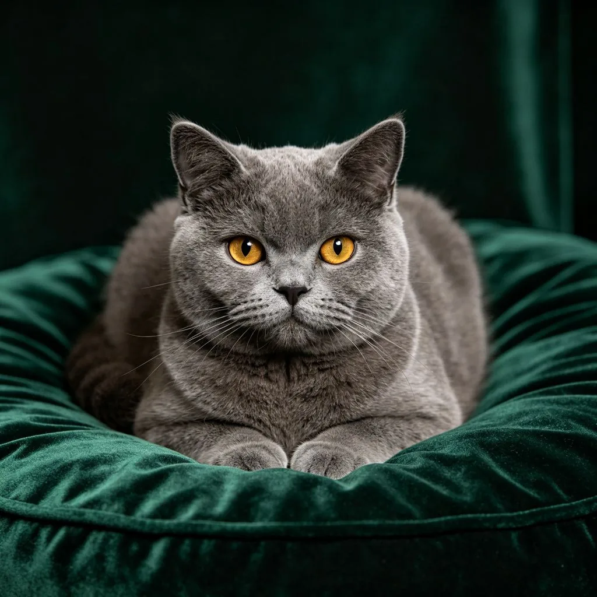

客廳的角落，一個大型魚缸安靜地佇立著，金魚在翠綠的水草間悠遊。一隻英國短毛藍貓跳到魚缸旁的櫃子上，把前爪搭在缸壁上，鼻子幾乎貼到了玻璃。牠的眼睛緊緊盯著水中的魚，尾巴輕輕擺動，不時發出輕微的「嘎嘎」聲——這是貓咪看到獵物時特有的興奮反應。但在這個畫面中，最迷人的不是貓和魚的對峙，而是魚缸水面上的倒影：藍貓的臉龐在水中微微扭曲，與真實的貓咪形成了一種奇妙的對話，彷彿有兩隻貓在隔著水面互相凝視。這個畫面，既寫實又超現實，既日常又夢幻。
貓咪能認出鏡中的自己嗎？
看到貓咪盯著倒影的畫面，很多人都會問一個問題：貓咪知道那是自己的倒影嗎？這個問題其實涉及到動物心理學中一個經典的測試——「鏡子自我識別測試」（Mirror Self-Recognition Test）。這個測試由心理學家戈登·蓋洛普（Gordon Gallup）在1970年提出，方法是在動物身上標記一個無味的顏料斑點，然後觀察動物在鏡子前的反應。如果動物會觸摸自己身上的斑點（而不是鏡中的斑點），就被認為具有自我識別能力。
到目前為止，通過鏡子自我識別測試的動物包括人類（通常在18個月大之後）、黑猩猩、大猩猩、紅毛猩猩、亞洲象、瓶鼻海豚、虎鯨和喜鵲。而貓、狗、大多數猴子和其他動物都沒有通過這個測試。這意味著，當你的貓咪盯著鏡子或水中的倒影時，牠很可能不知道那是自己——牠可能以為那是另一隻貓，或者只是一個有趣的會動的東西。

但這並不意味著貓咪沒有自我意識。鏡子測試只是衡量自我識別的一種方式，而且它可能偏向於視覺導向的動物。貓咪主要依賴嗅覺和聽覺來感知世界，對牠們來說，氣味可能比視覺更重要。一些研究表明，貓咪可以透過氣味來區分自己和其他貓咪——當貓咪聞到自己的尿液時，反應與聞到其他貓咪的尿液不同。這可能是貓咪版本的「自我識別」。
貓咪為什麼對魚缸如此著迷？
幾乎所有貓咪都對魚缸有著莫名的執著。牠們可以在魚缸前蹲上幾個小時，眼睛隨著魚的游動而轉動，有時還會用爪子拍打玻璃，或者發出那種獨特的「嘎嘎」聲。為什麼魚缸對貓咪有這麼大的吸引力？原因主要有以下幾點：

- 狩獵本能：貓咪是天生的狩獵者，即使是從未出過門的家貓，體內也流淌著狩獵的血液。魚缸中的魚不斷游動，觸發了貓咪的狩獵本能——移動的物體 = 潛在的獵物。貓咪盯著魚看，其實是在「狩獵」，即使牠知道自己抓不到。
- 視覺刺激：貓咪的視覺系統對移動的物體特別敏感，尤其是在光線變化的環境中。魚缸中的水會折射光線，產生閃爍的效果，加上魚的不斷游動，對貓咪來說就像一個永不停歇的電視節目，永遠有新的畫面可以看。
- 好奇心：貓咪以好奇心聞名，任何新鮮的事物都能引起牠們的興趣。魚缸中的水、魚、水草、氣泡，對貓咪來說都是新奇的，牠們想要了解這個「世界」裡到底發生了什麼。
- 無聊打發：室內貓的生活往往比較單調，魚缸可以提供寶貴的精神刺激。觀察魚的游動可以幫助貓咪打發時間，減少焦慮和無聊感。一些動物行為學家甚至建議，對於容易焦慮的室內貓，可以在安全的前提下設置一個魚缸來作為「貓咪電視」。
貓與魚缸的安全守則
雖然貓咪看魚缸的畫面很可愛，但飼主需要注意一些安全事項，確保貓咪和魚都能安全共處：
首先，確保魚缸有牢固的蓋子。貓咪是出色的跳躍者和攀爬者，一個沒有蓋子的魚缸對貓咪來說就像一個大型飲水機（或狩獵場）。貓咪可能會試圖撈魚、喝水，甚至掉進魚缸中，這不僅會嚇壞魚，也可能讓貓咪受傷或感冒。一個加鎖的魚缸蓋是必不可少的。
其次，注意魚缸的位置。不要把魚缸放在貓咪可以輕易跳上去的地方，比如矮櫃或桌子邊緣。最好放在貓咪無法接近的高度，或者在魚缸周圍設置障礙物。此外，魚缸應該遠離陽光直射和暖氣，以防水溫變化過大。
最後，觀察貓咪的反應。大多數貓咪只是喜歡看魚，但有些貓咪可能會過度著迷，出現持續嚎叫、抓撓玻璃、試圖打翻魚缸等行為。如果你的貓咪出現這種情況，可能需要限制牠接近魚缸的時間，或者在魚缸前設置隔離欄。另外，有些貓咪可能對魚缸的設備（如過濾器、加熱棒）感興趣，要確保電線和設備都在貓咪無法觸及的地方。
英國短毛貓小檔案
英國短毛貓是最古老的貓品種之一，起源可以追溯到古羅馬時期。牠們以圓潤的臉龐、濃密的毛髮和溫和的性格聞名。藍色（灰藍色）是英國短毛貓最經典的毛色，因此常被稱為「藍貓」。英國短毛貓性格獨立、安靜、適應力強，是非常適合室內飼養的品種。《愛麗絲夢遊仙境》中的「柴郡貓」就是以英國短毛貓為原型創作的。
魚缸倒影中的藍貓，或許永遠不會知道水中的那隻貓就是自己。但這並不要緊——對牠來說，魚缸是一個永遠充滿驚喜的窗口，一個可以讓狩獵本能得到釋放的舞台，一個在無聊的午後打發時間的最佳去處。而對我們來說，貓咪盯著魚缸的側影，和水中那個微微扭曲的倒影，共同構成了一幅關於好奇、本能和日常之美的畫面。有時候，最快樂的事情，就是在一個安靜的午後，和一隻貓一起，看著魚缸中的世界，什麼都不想，什麼都不做。